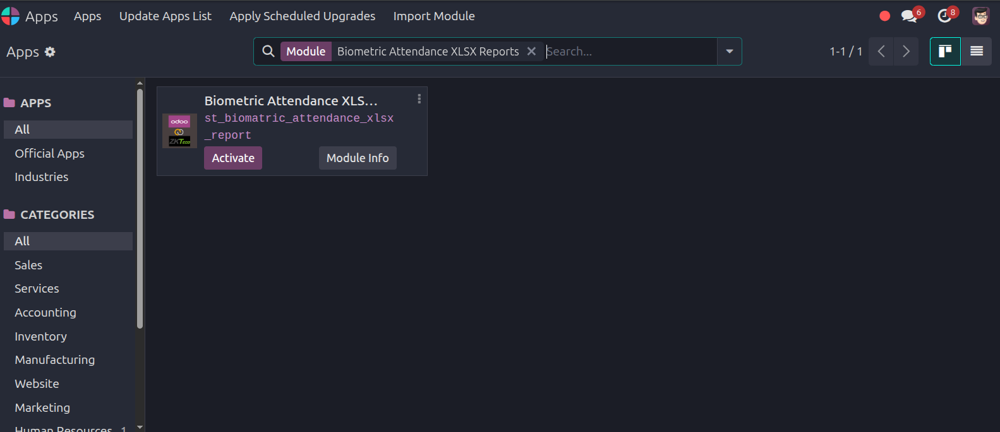
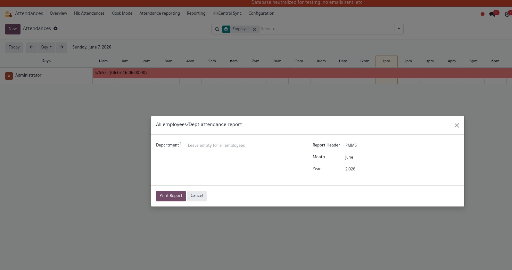
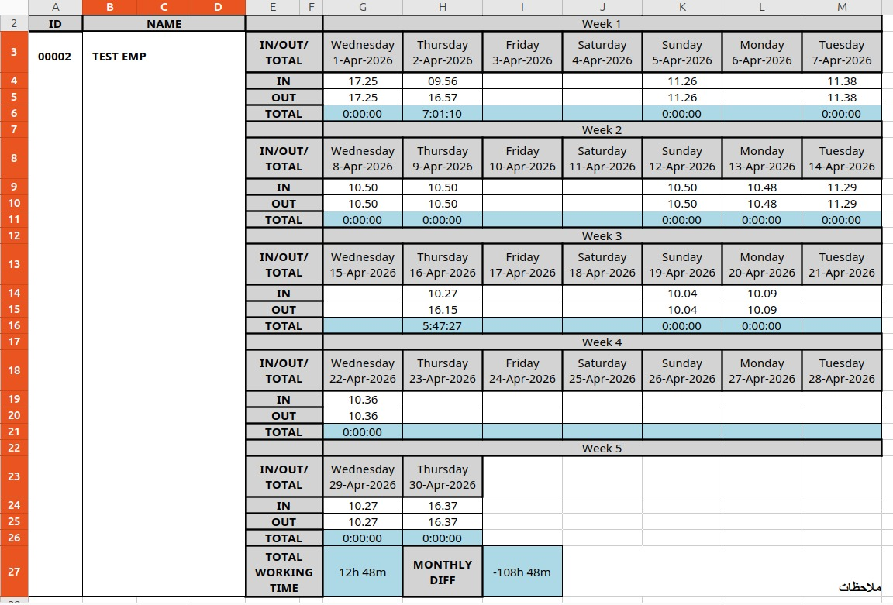
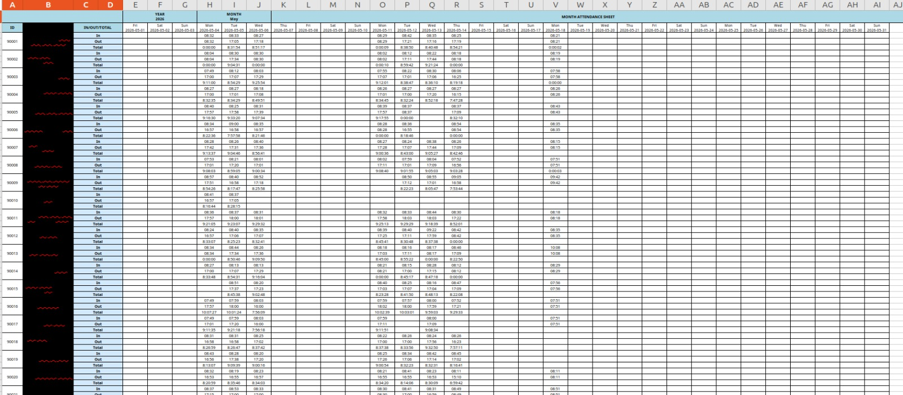

This module provides HR managers and operations teams with a powerful, executive-ready Individual XLSX Attendance Report generated directly from your Odoo backend. It converts complex Hikvision/biometric log timestamps into an elegantly structured, clean excel table specifically tailored for one employee at a time.
How it works: Using an intuitive reporting wizard, the user selects a target Employee, Month, and Year. The module automatically calculates the exact days of that month using python's calendar engine, pulls raw punch data from hik.attendance.log, computes the total active hours, and exports a professionally styled, color-coded sheet containing localized Arabic remark blocks.
Organizes daily logs horizontally into neat 7-day groups (Week 1 to Week 5) for quick and rapid browsing.
Tracks daily duration milestones, displaying exact Earliest IN and Latest OUT punch timestamps alongside net hours worked.
Smart mathematical engine automatically adjusts timelines and shifts that cross over midnight seamlessly using timedeltas.
Includes custom status boxes (Red, Orange, Light Green, Yellow) paired with localized Arabic text legends at the bottom.

Navigate to your Odoo Apps dashboard and search for Biometric Attendance XLSX Report.
Verify the custom reporting engine features and dependencies inside your local addons tree.
Click Activate. The wizard will smoothly integrate into your Human Resources reporting workflows.
xlsxwriter library in your python environment.
Isolate full monthly metrics for specific individuals using a Many2one employee_id lookup link.
Defaults dynamically to the current calendar month and year via standard python datetime constraints.
Allows supervisors to inject personalized Project or Company headers (Default: "PMMS") dynamically before compile runtime.



Launch Wizard Portal → Pick Employee & Target Month → Trigger Compilation → Auto-Download Formatted Excel Asset
Cohesive styling using native hexadecimal custom palettes.
Determines total calendar days automatically for any selected month.
Tracks precise cumulative work hours on cell G27 using native second counts.
Flashes instant success alerts to users before firing the browser download URL.
Empower your payroll managers and supervisors with clean visual indicators, eliminate attendance verification discrepancies, and keep perfect localized archives of your organization's human capital punch logs.